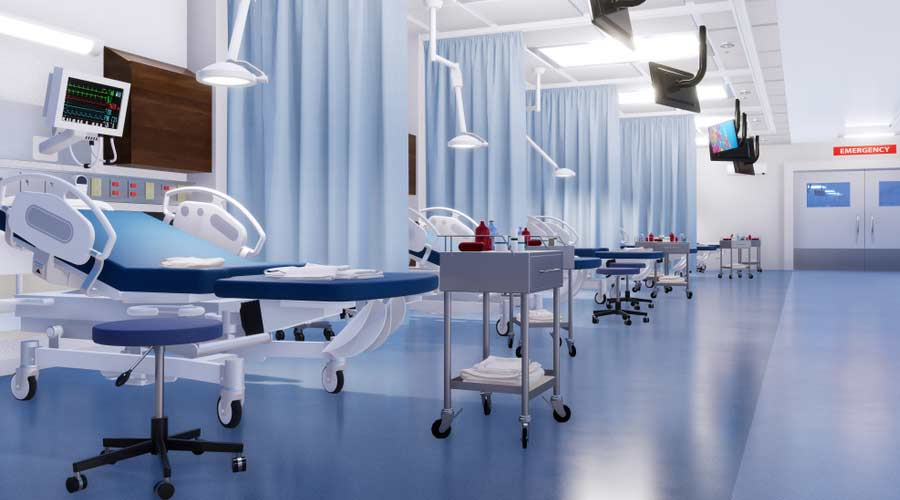

Vrindavan Hospital offers a range of medical facilities and services, which may include:

 1. Emergency Services: 24/7 emergency care with advanced life support and critical care units.
1. Emergency Services: 24/7 emergency care with advanced life support and critical care units.
2. Outpatient Services: Various specialty clinics and consultation services for different medical conditions.
3. Inpatient Services:Well-equipped patient rooms and wards for admitted patients, including ICU and NICU.
4. Diagnostic Services:Advanced imaging facilities like MRI, CT scan, X-ray, ultrasound, and laboratory services.
5. Surgical Services: Operation theaters for general, laparoscopic, and specialized surgeries.
6. Maternity and Child Care: Comprehensive obstetric and pediatric services, including labor and delivery rooms.
7. Pharmacy: In-house pharmacy providing medications and medical supplies.
8. Physiotherapy and Rehabilitation:Services for physical rehabilitation and therapy.
9. Specialty Departments:Cardiology, neurology, orthopedics, gastroenterology, oncology, and more.
10.Preventive Health Check-ups: Health screening packages and preventive care programs.
For detailed and specific information, it's best to contact the hospital directly or visit their odfficial website.

 HOSPITAL
HOSPITAL